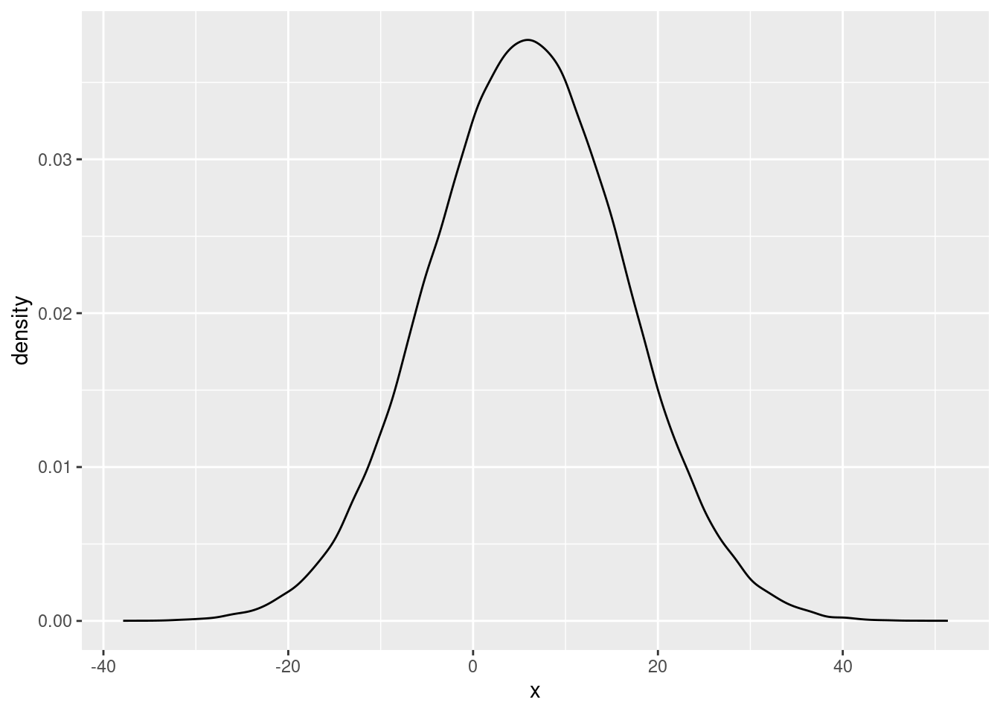
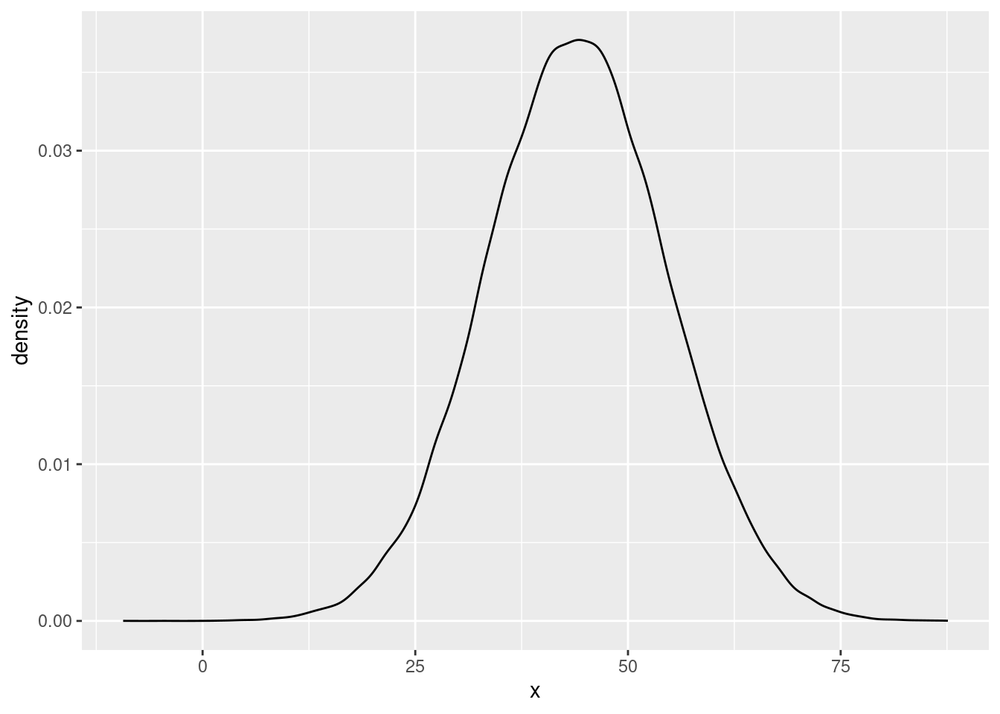

Chapter 13 Bayesian hypothesis testing with Bayes Factors
In this chapter, we will discuss how to compute Bayes Factors for a variety of General Linear Models using the BayesFactor package (Morey and Rouder 2023). The package implements the “default” priors discussed in the SDAM book.
13.1 The BayesFactor package
The BayesFactor package implements Bayesian model comparisons for General Linear Models (as well as some other models for e.g. contingency tables and proportions) using JZS-priors for the parameters, or fixing those parameters to 0. Because Bayes Factors are transitive, in the sense that a ratio of Bayes Factors is itself another Bayes factor:
\[\begin{align}
\text{BF}_{1,2} &= \frac{p(Y_1,\ldots,Y_n|\text{MODEL 1})}{p(Y_1,\ldots,Y_n|\text{MODEL 2})} \\
&= \frac{p(Y_1,\ldots,Y_n|\text{MODEL 1})/p(Y_1,\ldots,Y_n|\text{MODEL 0})} {p(Y_1,\ldots,Y_n|\text{MODEL 2})/p(Y_1,\ldots,Y_n|\text{MODEL 0})} \\
&= \frac{\text{BF}_{1,0}}{\text{BF}_{2,0}} ,
\end{align}\]
you can compute many other Bayes Factors which might not be immediately provided by the package, by simply dividing the Bayes factors that the package does provide. This makes the procedure of model comparison very flexible.
If you haven’t installed the BayesFactor package yet, you need to do so first. Then you can load it as usual by:
13.1.1 A Bayesian one-sample t-test
A Bayesian alternative to a \(t\)-test is provided via the ttestBF function. Similar to the base R t.test function of the stats package, this function allows computation of a Bayes factor for a one-sample t-test or a two-sample t-tests (as well as a paired t-test, which we haven’t covered in the course). Let’s re-analyse the data we considered before, concerning participants’ judgements of the height of Mount Everest. The one-sample t-test we computed before, comparing the judgements to an assumed mean of \(\mu = 8848\), was:
# load the data
library(sdamr)
data("anchoring")
# select the subset we analysed in Chapter 3
dat <- subset(anchoring,(referrer == "swps" | referrer == "swpson") & anchor == "low")
# compute the Frequentist one-sample t-test
t.test(dat$everest_meters, mu=8848)##
## One Sample t-test
##
## data: dat$everest_meters
## t = -8.4429, df = 108, p-value = 1.558e-13
## alternative hypothesis: true mean is not equal to 8848
## 95 percent confidence interval:
## 5716.848 6907.537
## sample estimates:
## mean of x
## 6312.193The syntax for the Bayesian alternative is very similar, namely:
This code provides a test of the following models:
\[\begin{align} H_0\!&: \mu = 8848 \\ H_1\!&: \frac{\mu - 8848}{\sigma_\epsilon} \sim \textbf{Cauchy}(r) \end{align}\]
After computing the Bayes factor and storing it in an object bf_anchor, we just see the print-out of the result by typing in the name of the object:
## Bayes factor analysis
## --------------
## [1] Alt., r=0.707 : 46902934288 ±0%
##
## Against denominator:
## Null, mu = 8848
## ---
## Bayes factor type: BFoneSample, JZSThis output is quite sparse, which is by no means a bad thing. It shows a few important things. Under Alt. (which stands for the alternative hypothesis), we first see the scaling factor \(r\) used for the JZS prior distribution on the effect size. We then see the value of the Bayes Factor, which is “extreme” (>100), showing that the data increases the posterior odds ratio for the alternative model over the null model by a factor of 46,902,934,288. Quite clearly, the average judgements differed from the true height of Mount Everest! After the computed value of the Bayes factor, you will find a proportional error for the estimate of the Bayes factor. In general, the marginal likelihoods that constitute the numerator (“top model”) and denominator (“bottom model”) of the Bayes factor cannot be computed exactly, and have to be approximated by numerical integration routines or simulation. This results in some (hopefully small) error in computation, and the error estimate indicates the extend to which the true Bayes factor might differ from the computed one. In this case, the error is (proportionally) very small, and hence we can be assured that our conclusion is unlikely to be affected by error in the approximation.
As we didn’t set the scaling factor explicitly, the default value is used, which is the “medium” scale \(r = \frac{\sqrt{2}}{2} = 0.707\). Note that this is actually different from the default value of \(r=1\) proposed in Rouder et al. (2009), which first introduced this version of the Bayesian \(t\)-test to a psychological audience, and the one used to illustrate the method in the SDAM book. Whilst reducing the default value to \(r=0.707\) is probably reasonable given the effect sizes generally encountered in psychological studies, a change in the default prior highlights the subjective nature of the prior distribution in the Bayesian model comparison procedure. You should also realise that different analyses, such as t-tests, ANOVA, and regression models, use different default values for the scaling factor. As shown in the SDAM book, the value of the Bayes factor depends on the choice for the scaling factor. Although the default value may be deemed reasonable, the choice should really be based on a consideration of the magnitude of the effect sizes you (yes, you!) expect in a particular study. This is not always easy, but you should pick one (the default value, for instance, if you can’t think of a better one) before conducting the analysis. If you feel that makes the test too subjective, you may may want to check the robustness of the result for different choices of the scaling factor. You can do this by computing the Bayes factor for a range of choices of the scaling factor, and then inspecting whether the strength of the evidence is in line with your choice for a reasonable range of values around your choice. The code below provides an example of this:
# create a vector with different values for the scaling factor r
rscale <- seq(.001, 3, length=100)
# create an empty vector to store the resulting Bayes factors
BFs <- vector("double", length=100)
# compute the Bayes factor for each value of r
for(i in 1:100) {
temp_bf <- ttestBF(dat$everest_meters, mu=8848, r = rscale[i])
# the object returned by the ttestBF function is a so-called S4 object
# this has "slots" which can be accessed through the "@" operator.
# The actual value of the BF is extracted by @bayesFactor$bf
# which is stored in a logarithmic scale, so we need to use "exp"
# to obtain the value of the actual Bayes factor:
BFs[i] <- exp(temp_bf@bayesFactor$bf)
}
# use ggplot to plot the values of the Bayes factor against the choice of r
library(ggplot2)
ggplot(data.frame(r=rscale,BF=BFs),aes(x=r,y=BF)) + geom_line()
Given the scale of the \(y\)-axis (e.g., the first tick mark is at 1e+10 = 10,000,000,000), there is overwhelming evidence against the null-hypothesis for most choices of the scaling factor. Hence, the results seem rather robust to the exact choice of prior.
13.1.2 A Bayesian two-sample t-test
To compare the means of two groups, we can revisit the Tetris study, where we considered whether the number of memory intrusions is reduced after playing Tetris in combination with memory reactivation, compared to just memory reactivation by itself. The ttestBF function allows us to provide the data for one group as the x argument, and the data for the other group as the y argument, so we can perform our model comparison, by subsetting the dependent variable appropriately, as follows:
## Warning in data("tetris2015", message = FALSE): data set 'FALSE' not foundbf_tetr <- ttestBF(x=subset(tetris2015, Condition == "Reactivation")$Days_One_to_Seven_Number_of_Intrusions, y = subset(tetris2015, Condition == "Tetris_Reactivation")$Days_One_to_Seven_Number_of_Intrusions)
bf_tetr## Bayes factor analysis
## --------------
## [1] Alt., r=0.707 : 16.78482 ±0%
##
## Against denominator:
## Null, mu1-mu2 = 0
## ---
## Bayes factor type: BFindepSample, JZSWhich shows strong evidence for the alternative hypothesis over the null hypothesis that the means are identical (i.e. that the difference between the means is zero, \(\mu_1 - \mu_2 = 0\)), as the alternative model is 2.82 times more likely than the null model, which sets the difference between the means to exactly \(\mu_1 - \mu_2 = 0\), rather than allowing different values of this difference through the prior distribution.
A two-sample t-test should really be identical to a two-group ANOVA model, as both concern the same General Linear Model (a model with a single contrast-coding predictor, with e.q. values of \(-\tfrac{1}{2}\) and \(\tfrac{1}{2}\)). Before fully discussing the way to perform an ANOVA-type analysis with the BayesFactor package, let’s just double-check this is indeed the case:
dat <- subset(tetris2015, Condition %in% c("Tetris_Reactivation","Reactivation"))
# remove levels of Condition that are no longer needed due to subsetting
dat$Condition <- droplevels(dat$Condition)
# use the anovaBF function
bf2_tetr <- anovaBF(Days_One_to_Seven_Number_of_Intrusions ~ Condition, data = dat)
bf2_tetr## Bayes factor analysis
## --------------
## [1] Condition : 16.78482 ±0%
##
## Against denominator:
## Intercept only
## ---
## Bayes factor type: BFlinearModel, JZSThe results are indeed identical. Note that this is because both the ttestBF and anovaBF function use the same prior distribution for the effect.
13.1.3 A Bayesian ANOVA
More general ANOVA-type models can be tested though the anovaBF function. This function takes the following important arguments:
formula: a formula like in thelmfunction, specifying which factors to include as well as their interactions (by e.g. using an*operator to specify you want to include the main effects as well as their interactions. Note that unlike in thelmfunction, all terms must be factors.data: adata.framecontaining data for all factors in the formula.whichRandom: a character vector specifying which factors are random. Random factors can be used to obtain a model similar to a repeated-measures ANOVA, or a (restricted) set of linear-mixed effects models (with only factors for the fixed effects).whichModels: a character vector specifying which models to compare. The allowed values are"all","withmain"(the default),"top", and"bottom". SettingwhichModelsto"all"will test all models that can be created by including or not including a main effect or interaction."top"will test all models that can be created by removing or leaving in a main effect or interaction term from the full model."bottom"creates models by adding single factors or interactions to the null model."withmain"will test all models, with the constraint that if an interaction is included, the corresponding main effects are also included. Setting the argument totopproduces model comparisons similar to the Type 3 procedure, comparing the full model to a restricted model with each effect removed. Setting the argument towithMainproduces model comparisons similar to the Type 2 procedure, with model comparisons that respect the “principle of marginality”, such that tests of the main effects do not consider higher-order interactions, whilst a test of any interaction includes the main effects that constitute the elements in the interactions.rscaleFixed: prior scale for fixed effects. The value can be given numerically, or as one of three strings:"medium"(\(r = \tfrac{1}{2}\)),"wide": \(r = \tfrac{\sqrt{2}}{2}\), or"ultrawide"(\(r=1\)). The default is “medium".rscaleRandom: prior scale for random effects. Accepts the same strings asrscaleFixed, and in addition"nuisance"(\(r = 1\)). The default is"nuisance".rscaleEffects: a named vector with prior scales for individual factors.
The anovaBF function will (as far as I can gather) always use contr.sum() contrasts for the factors. So setting your own contrasts will have no effect on the results. The exact contrast should not really matter for omnibus tests, and sum-to-zero are a reasonable choice in general (contr.sum implements what we called effect-coding before).3 While the anovaBF function always uses the JZS prior for any effects, it allows you to specify exactly which scaling factor to use for every effect, if so desired. One perhaps confusing thing is that effect-sizes for ANOVA designs (as far as I can gather) are based on standardized treatment-effects, whilst those for the t-test designs are based on Cohens-\(d\) effect sizes. Hence, the values of the scaling factor \(r\) for “medium”, “wide”, and “ultrawide” are different for the Bayesian \(t\)-test and ANOVA models (whilst they provide the same results for models with two conditions).
Let’s see what happens when we use a Bayesian ANOVA-type analysis for the data on experimenter beliefs in social priming. First, let’s load the data, and turn the variables reflecting the experimental manipulations into factors:
data("expBelief")
dat <- expBelief
dat$primeCond <- factor(dat$primeCond)
dat$experimenterBelief <- factor(dat$experimenterBelief)We can now use the anovaBF function to compute the Bayes factors:
# this uses a sampling based approach
# set the seed to make it reproducible
set.seed(202111208)
bf_expB <- anovaBF(ApproachAdvantage ~ primeCond*experimenterBelief, data = dat)
bf_expB## Bayes factor analysis
## --------------
## [1] experimenterBelief : 537.3879 ±0%
## [2] primeCond : 0.1282136 ±0.12%
## [3] experimenterBelief + primeCond : 69.86988 ±0.98%
## [4] experimenterBelief + primeCond + experimenterBelief:primeCond : 15.62005 ±5.59%
##
## Against denominator:
## Intercept only
## ---
## Bayes factor type: BFlinearModel, JZSA main thing to note here is that the comparisons of different versions of MODEL G are against the same MODEL R, which is an intercept-only model. We can see that all models which include experimenterBelief receive strong evidence against the intercept-only model, apart from the model which only includes primeCond, which has less evidence than the intercept-only model. Although this indicates that the primeCond effect might be ignorable, the comparisons are different from comparing reduced models to the general MODEL G with all effects included. We can obtain these Type 3 comparisons by setting the whichModels argument to `top``:
set.seed(202111208)
bf_expB2 <- anovaBF(ApproachAdvantage ~ primeCond*experimenterBelief, data = dat, whichModels = "top")
bf_expB2## Bayes factor top-down analysis
## --------------
## When effect is omitted from experimenterBelief + primeCond + experimenterBelief:primeCond , BF is...
## [1] Omit experimenterBelief:primeCond : 4.703731 ±1.7%
## [2] Omit primeCond : 7.674953 ±2.19%
## [3] Omit experimenterBelief : 0.00188326 ±1.79%
##
## Against denominator:
## ApproachAdvantage ~ experimenterBelief + primeCond + experimenterBelief:primeCond
## ---
## Bayes factor type: BFlinearModel, JZSIt is very important to realise that the output now concerns the comparison of the reduced model (in the numerator, i.e. the “top model”) against the full model (in the denominator, i.e. the “bottom model”), as is stated in the Against denimonator part of the output. So these are \(\text{BF}_{0,1}\) values, rather than \(\text{BF}_{1,0}\) values. That means that low values of the Bayes factor now indicate evidence for the alternative hypothesis that an effect is different from 0. As we find a very low \(\text{BF}_{0,1}\) value for the experimenterBelief effect, this thus shows strong evidence that this effect is different than 0. The \(\text{BF}_{0,1}\) values for the other effects are larger than 1, which indicate more support for the null hypothesis than for the alternative hypothesis.
We can change the output from a \(\text{BF}_{0,1}\) value to a \(\text{BF}_{1,0}\) value by simply inverting the Bayes factors, as follows:
## denominator
## numerator experimenterBelief + primeCond
## experimenterBelief + primeCond + experimenterBelief:primeCond 0.2125972
## denominator
## numerator experimenterBelief + experimenterBelief:primeCond
## experimenterBelief + primeCond + experimenterBelief:primeCond 0.130294
## denominator
## numerator primeCond + experimenterBelief:primeCond
## experimenterBelief + primeCond + experimenterBelief:primeCond 530.994As we noted before, we again see strong evidence for the effect of experimenterBelief when we remove it from the full model, but not for the other effects.
The transitivity of the Bayes factor means that we can also obtain some of these results through a ratio of the Bayes factors obtained earlier. For instance, a Type 3 test of the effect of experimenterBelief:primeCond interaction can be obtained by comparing a model with all effects included to a model without this interaction. In the analysis stored in bf_expB, we compared a number of the possible models to an intercept-only model. By comparing the Bayes factors of the model which excludes the interaction to a model which includes it, we can obtain the same Bayes factor of that interaction as follows. In the output of bf_expB, the fourth element compared the full model to the intercept-only model, whilst in the third element, a model with only the main effects of experimenterBelief and primeCond are compared to an intercept-only model. The Type 3 test of the interaction can then be obtained through the ratio of these two Bayes factors:
## Bayes factor analysis
## --------------
## [1] experimenterBelief + primeCond + experimenterBelief:primeCond : 0.2235591 ±5.68%
##
## Against denominator:
## ApproachAdvantage ~ experimenterBelief + primeCond
## ---
## Bayes factor type: BFlinearModel, JZSwhich indicates evidence for the null hypothesis that there is no moderation of the effect of experimenterbelief by primeCond, as the Bayes factor is well below 1. We cannot replicate all Type 3 analyses with the results obtained earlier, unless we ask the function to compare every possible model against the intercept-only model, by specifying whichModels = "all":
set.seed(202111208)
bf_expB3 <- anovaBF(ApproachAdvantage ~ primeCond*experimenterBelief, data = dat, whichModels = "all")
bf_expB3## Bayes factor analysis
## --------------
## [1] experimenterBelief : 537.3879 ±0%
## [2] primeCond : 0.1282136 ±0.12%
## [3] experimenterBelief:primeCond : 0.1613884 ±0.1%
## [4] experimenterBelief + primeCond : 69.86988 ±0.98%
## [5] experimenterBelief + experimenterBelief:primeCond : 114.0048 ±1.69%
## [6] primeCond + experimenterBelief:primeCond : 0.02797422 ±1.13%
## [7] experimenterBelief + primeCond + experimenterBelief:primeCond : 14.85414 ±1.38%
##
## Against denominator:
## Intercept only
## ---
## Bayes factor type: BFlinearModel, JZSFor instance, we can now obtain a Type 3 test for experimenterBelief by comparing the full model (the 7th element in the output) to a model which just excludes this effect (i.e. the 6th element):
## Bayes factor analysis
## --------------
## [1] experimenterBelief + primeCond + experimenterBelief:primeCond : 530.994 ±1.79%
##
## Against denominator:
## ApproachAdvantage ~ primeCond + experimenterBelief:primeCond
## ---
## Bayes factor type: BFlinearModel, JZSwhich reproduces mostly the result we obtained by setting whichModel = "top" before.
13.1.4 Bayesian regression and ANCOVA
Apart from different default values of the scaling factor \(r\) in the scaled-Cauchy distribution, the BayesFactor package works in the same way for models which include metric predictors. In a multiple regression model with only metric predictors, we can use the convenience function regressionBF. If you want to mix metric and categorical predictors, as in an ANCOVA model, you will have to use the generalTestBF function. All functions discussed so far are really just convenience interfaces to the generalTestBF, which implements Bayes factors for the General Linear Model. These convenience functions are used to determine an appropriate scaling factor for the different terms in the model, but not much else of concern, so you can replicate all the previous analyses through the generalTestBFfunction, if you’d like.
13.1.5 Bayesian repeated-measures ANOVA
An analysis similar to a repeated-measures ANOVA can also be obtained. Just like the afex package, the BayesFactor package requires data in the long format. Let’s first prepare the data of the Cheerleader-effect experiment:
data("cheerleader")
dat <- cheerleader
# remove participants which should be excluded
dat <- subset(dat, Excluded == 0)
# get rid of unused factor levels in Item by
dat$Item <- factor(dat$Item)
dat$Presentation <- forcats::fct_recode(dat$Item, Different = "Control_Group", Similar = "Distractor_Manipulation")
dat$Version <- forcats::fct_recode(dat$Task, Identical = "Identical-Distractors", Variant = "Self-Distractors")The way the BayesFactor package deals with repeated-measures designs is a little different
from how we treated repeated-measures ANOVA. Rather than computing within-subjects
composite variables, the package effectively deals with individual differences
by adding random intercepts (like in a linear mixed-effects model). To do this,
we add Participant as an additive effect, and then classify it as a random
effect through the whichRandom argument. To obtain Type-3 comparisons,
we again set whichModels to top:
set.seed(202111208)
bf_rmanova <- anovaBF(Response ~ Task*Item + Participant, whichRandom = "Participant", data=dat, whichModels = "top")
bf_rmanova## Bayes factor top-down analysis
## --------------
## When effect is omitted from Task + Item + Task:Item + Participant , BF is...
## [1] Omit Item:Task : 1.340752 ±9.36%
## [2] Omit Item : 7.465094e-06 ±9.62%
## [3] Omit Task : 1.439629 ±7.75%
##
## Against denominator:
## Response ~ Task + Item + Task:Item + Participant
## ---
## Bayes factor type: BFlinearModel, JZSIn this case, the proportional errors of the results may be deemed to high. We
can get more precise results by obtaining more samples (for these complex models,
the estimation of the Bayes factor is done with a sampling-based approximation).
We can do this, without the need to respecify the model, with the recompute
function, where we can increase the number of sampling iterations from the default
(10,000 iterations) to something higher:
## Bayes factor top-down analysis
## --------------
## When effect is omitted from Task + Item + Task:Item + Participant , BF is...
## [1] Omit Item:Task : 1.230971 ±2.77%
## [2] Omit Item : 7.194855e-06 ±2.85%
## [3] Omit Task : 1.364189 ±2.46%
##
## Against denominator:
## Response ~ Task + Item + Task:Item + Participant
## ---
## Bayes factor type: BFlinearModel, JZSThis provides somewhat better results, although it would be better to increase the number of iterations even more.
As before, the Bayes Factors are for the reduced model compared to the full model and we can get more easily interpretable results by computing the inverse value
## denominator
## numerator Task + Item + Participant
## Task + Item + Task:Item + Participant 0.812367
## denominator
## numerator Task + Task:Item + Participant
## Task + Item + Task:Item + Participant 138988.2
## denominator
## numerator Item + Task:Item + Participant
## Task + Item + Task:Item + Participant 0.7330362We can see that we obtain “extreme” evidence for the main effect of Item. For the other effects, the evidence is more in favour of the null-hypothesis.
13.1.6 Parameter estimates
By default, the Bayes Factor objects just provide the values of the Bayes Factor. We don’t get estimates of the parameters.
To get (approximate) posterior distributions for the parameters, we can
first estimate the general MODEL G with the lmBF function. This function
is meant to compute a specific General Linear Model (rather than a set of such
models). For example, for the Social Priming example, we can estimate the
ANOVA model with lmBF as:
dat <- expBelief
dat$primeCond <- factor(dat$primeCond)
dat$experimenterBelief <- factor(dat$experimenterBelief)
set.seed(202111208)
bflm_expB <- lmBF(ApproachAdvantage ~ primeCond*experimenterBelief, data = dat)We can then use this estimated model to obtain samples from the posterior
distribution over the model parameters. This is done with the posterior
function of the Bayesfactor package. We can determine the number
of samples through the iterations argument. This should generally
be a high number, to get more reliable estimates:
The post_samples object can be effectively treated as a matrix, with columns
corresponding to the different parameters, and in the rows the samples. So
we can obtain posterior means as the column-wise averages:
## mu primeCond-HPP
## 21.440783 5.836911
## primeCond-LPP experimenterBelief-H
## -5.836911 43.978650
## experimenterBelief-L primeCond:experimenterBelief-HPP.&.H
## -43.978650 8.725977
## primeCond:experimenterBelief-HPP.&.L primeCond:experimenterBelief-LPP.&.H
## -8.725977 -8.725977
## primeCond:experimenterBelief-LPP.&.L sig2
## 8.725977 45920.258584
## g_primeCond g_experimenterBelief
## 1.928212 2.384292
## g_primeCond:experimenterBelief
## 1.435865Here, mu corresponds to the “grand mean” (i.e. the average of averages),
which is is the intercept in a GLM with sum-to-zero contrasts. The
next mean corresponds to the posterior mean of the treatment effect of the
high-power prime condition (primeCond-HPP). I.e., this is the marginal mean
of the high-power prime conditions, compared to the grand mean. The second effect
is the posterior mean of the treatment effect of the low-power prime condition (primeCond-LPP). As
there are only two power-prime conditions, this is exactly the negative value
of the posterior mean of the high-power prime treatment effect (the grand mean
is exactly halfway between these two treatment effects). We get similar
treatment effects for the main effect of experimenter belief, and the
interaction between power prime and experimenter belief. The posterior
mean labelled sig2 is an estimate of the error variance. The columns
after this are values related to the specification of the prior, which
we will ignore for now.
We can do more than compute means for these samples from the posterior distribution. For instance, we can plot the (approximate) posterior distributions as well. For example, we can plot the posterior distribution of the high-power prime treatment effect as:
 and for the experimenter-belief-high treatment effect as
ggplot(data.frame(x=as.numeric(post_samples[,c("experimenterBelief-H")])), aes(x=x)) + geom_density() The first plot indicates that the posterior probability is quite high at the value of 0. In the second plot, the mass of the posterior distribution is clearly quite far removed from 0. This is in line with earlier results from the Bayes Factors, which showed little evidence for the main effect of power prime, but strong evidence for the effect of experimenter belief.
13.1.7 Highest-density interval
A convenient way to obtain highest-density intervals, is by using the hdi function from the HDInterval package (R-HDInterval?). This function is defined for
a variety of objects, including those returned by the BayesFactor::posterior() function. The function has, in addition
to the object, one more argument called credMass, which specifies the
width of the credible interval (credMass = .95 is the default). For example,
the 95% HDI interval for the two parameters that we plotted above are obtained as follows:
## var1
## lower -14.74079
## upper 26.47933
## attr(,"credMass")
## [1] 0.95# (don't have to specify credMass, as we want the default value)
HDInterval::hdi(post_samples[,c("experimenterBelief-H")])## var1
## lower 23.57900
## upper 65.49569
## attr(,"credMass")
## [1] 0.95The output shows the lower and upper bound for each HDI. We see that the 95% HDI for power prime effect includes 0, whilst the 95% HDI for the experimenter belief effect does not. Again, this corresponds to what we observed earlier, that there is strong evidence for the experimenter belief effect, but not for the power prime effect.
13.2 Bayes Factors for brms models
The BayesFactor package computes Bayes Factors for a number of standard analyses, using the default priors set in the package. We may want to compute Bayes Factors to test hypotheses for more complex models. In general, we can compare any models by first computing the marginal likelihood for each model, and then computing the Bayes Factor as the ratio of these marginal likelihoods. Computing marginal likelihoods is not always straightforward, but a general procedure that often works reasonably well is called “bridge sampling” (Quentin F. Gronau et al. 2017), and has been implemented in the bridgesampling (Quentin F. Gronau and Singmann 2021) package. Before discussing how to use this, we will first discuss a simpler way to compute Bayes Factors for particular comparisons within the context of a brms model.
For the following examples, we will start with the multiple regression model for the trump2016 data that we also estimated in the previous chapter, but now setting the prior distributions to more informative ones, as is advisable when computing Bayes Factors:
## Loading required package: Rcpp## Loading 'brms' package (version 2.20.4). Useful instructions
## can be found by typing help('brms'). A more detailed introduction
## to the package is available through vignette('brms_overview').##
## Attaching package: 'brms'## The following object is masked from 'package:stats':
##
## ardata("trump2016", package="sdamr")
dat <- subset(trump2016,state != "District of Columbia")
# define the prior distributions
mod_priors <- c(# intercept
prior(normal(80, 10), class = Intercept),
# slopes
prior(normal(0, 1), class = b, coef = "hate_groups_per_million"),
prior(normal(0, 1), class = b, coef = "percent_bachelors_degree_or_higher"),
# error SD
prior(normal(0, 2), class = sigma))
# estimate the model
mod_regression <- brms::brm(formula = percent_Trump_votes ~ hate_groups_per_million + percent_bachelors_degree_or_higher,
data=dat, seed=20221213, prior = mod_priors, sample_prior=TRUE)## Compiling Stan program...## Start sampling##
## SAMPLING FOR MODEL 'anon_model' NOW (CHAIN 1).
## Chain 1:
## Chain 1: Gradient evaluation took 1.6e-05 seconds
## Chain 1: 1000 transitions using 10 leapfrog steps per transition would take 0.16 seconds.
## Chain 1: Adjust your expectations accordingly!
## Chain 1:
## Chain 1:
## Chain 1: Iteration: 1 / 2000 [ 0%] (Warmup)
## Chain 1: Iteration: 200 / 2000 [ 10%] (Warmup)
## Chain 1: Iteration: 400 / 2000 [ 20%] (Warmup)
## Chain 1: Iteration: 600 / 2000 [ 30%] (Warmup)
## Chain 1: Iteration: 800 / 2000 [ 40%] (Warmup)
## Chain 1: Iteration: 1000 / 2000 [ 50%] (Warmup)
## Chain 1: Iteration: 1001 / 2000 [ 50%] (Sampling)
## Chain 1: Iteration: 1200 / 2000 [ 60%] (Sampling)
## Chain 1: Iteration: 1400 / 2000 [ 70%] (Sampling)
## Chain 1: Iteration: 1600 / 2000 [ 80%] (Sampling)
## Chain 1: Iteration: 1800 / 2000 [ 90%] (Sampling)
## Chain 1: Iteration: 2000 / 2000 [100%] (Sampling)
## Chain 1:
## Chain 1: Elapsed Time: 0.037 seconds (Warm-up)
## Chain 1: 0.034 seconds (Sampling)
## Chain 1: 0.071 seconds (Total)
## Chain 1:
##
## SAMPLING FOR MODEL 'anon_model' NOW (CHAIN 2).
## Chain 2:
## Chain 2: Gradient evaluation took 5e-06 seconds
## Chain 2: 1000 transitions using 10 leapfrog steps per transition would take 0.05 seconds.
## Chain 2: Adjust your expectations accordingly!
## Chain 2:
## Chain 2:
## Chain 2: Iteration: 1 / 2000 [ 0%] (Warmup)
## Chain 2: Iteration: 200 / 2000 [ 10%] (Warmup)
## Chain 2: Iteration: 400 / 2000 [ 20%] (Warmup)
## Chain 2: Iteration: 600 / 2000 [ 30%] (Warmup)
## Chain 2: Iteration: 800 / 2000 [ 40%] (Warmup)
## Chain 2: Iteration: 1000 / 2000 [ 50%] (Warmup)
## Chain 2: Iteration: 1001 / 2000 [ 50%] (Sampling)
## Chain 2: Iteration: 1200 / 2000 [ 60%] (Sampling)
## Chain 2: Iteration: 1400 / 2000 [ 70%] (Sampling)
## Chain 2: Iteration: 1600 / 2000 [ 80%] (Sampling)
## Chain 2: Iteration: 1800 / 2000 [ 90%] (Sampling)
## Chain 2: Iteration: 2000 / 2000 [100%] (Sampling)
## Chain 2:
## Chain 2: Elapsed Time: 0.038 seconds (Warm-up)
## Chain 2: 0.029 seconds (Sampling)
## Chain 2: 0.067 seconds (Total)
## Chain 2:
##
## SAMPLING FOR MODEL 'anon_model' NOW (CHAIN 3).
## Chain 3:
## Chain 3: Gradient evaluation took 5e-06 seconds
## Chain 3: 1000 transitions using 10 leapfrog steps per transition would take 0.05 seconds.
## Chain 3: Adjust your expectations accordingly!
## Chain 3:
## Chain 3:
## Chain 3: Iteration: 1 / 2000 [ 0%] (Warmup)
## Chain 3: Iteration: 200 / 2000 [ 10%] (Warmup)
## Chain 3: Iteration: 400 / 2000 [ 20%] (Warmup)
## Chain 3: Iteration: 600 / 2000 [ 30%] (Warmup)
## Chain 3: Iteration: 800 / 2000 [ 40%] (Warmup)
## Chain 3: Iteration: 1000 / 2000 [ 50%] (Warmup)
## Chain 3: Iteration: 1001 / 2000 [ 50%] (Sampling)
## Chain 3: Iteration: 1200 / 2000 [ 60%] (Sampling)
## Chain 3: Iteration: 1400 / 2000 [ 70%] (Sampling)
## Chain 3: Iteration: 1600 / 2000 [ 80%] (Sampling)
## Chain 3: Iteration: 1800 / 2000 [ 90%] (Sampling)
## Chain 3: Iteration: 2000 / 2000 [100%] (Sampling)
## Chain 3:
## Chain 3: Elapsed Time: 0.038 seconds (Warm-up)
## Chain 3: 0.033 seconds (Sampling)
## Chain 3: 0.071 seconds (Total)
## Chain 3:
##
## SAMPLING FOR MODEL 'anon_model' NOW (CHAIN 4).
## Chain 4:
## Chain 4: Gradient evaluation took 5e-06 seconds
## Chain 4: 1000 transitions using 10 leapfrog steps per transition would take 0.05 seconds.
## Chain 4: Adjust your expectations accordingly!
## Chain 4:
## Chain 4:
## Chain 4: Iteration: 1 / 2000 [ 0%] (Warmup)
## Chain 4: Iteration: 200 / 2000 [ 10%] (Warmup)
## Chain 4: Iteration: 400 / 2000 [ 20%] (Warmup)
## Chain 4: Iteration: 600 / 2000 [ 30%] (Warmup)
## Chain 4: Iteration: 800 / 2000 [ 40%] (Warmup)
## Chain 4: Iteration: 1000 / 2000 [ 50%] (Warmup)
## Chain 4: Iteration: 1001 / 2000 [ 50%] (Sampling)
## Chain 4: Iteration: 1200 / 2000 [ 60%] (Sampling)
## Chain 4: Iteration: 1400 / 2000 [ 70%] (Sampling)
## Chain 4: Iteration: 1600 / 2000 [ 80%] (Sampling)
## Chain 4: Iteration: 1800 / 2000 [ 90%] (Sampling)
## Chain 4: Iteration: 2000 / 2000 [100%] (Sampling)
## Chain 4:
## Chain 4: Elapsed Time: 0.037 seconds (Warm-up)
## Chain 4: 0.034 seconds (Sampling)
## Chain 4: 0.071 seconds (Total)
## Chain 4:The results of this model are
## Family: gaussian
## Links: mu = identity; sigma = identity
## Formula: percent_Trump_votes ~ hate_groups_per_million + percent_bachelors_degree_or_higher
## Data: dat (Number of observations: 50)
## Draws: 4 chains, each with iter = 2000; warmup = 1000; thin = 1;
## total post-warmup draws = 4000
##
## Population-Level Effects:
## Estimate Est.Error l-95% CI u-95% CI Rhat
## Intercept 82.80 5.61 71.76 94.12 1.00
## hate_groups_per_million 1.09 0.42 0.22 1.92 1.00
## percent_bachelors_degree_or_higher -1.21 0.17 -1.56 -0.88 1.00
## Bulk_ESS Tail_ESS
## Intercept 3733 2538
## hate_groups_per_million 3744 3113
## percent_bachelors_degree_or_higher 3978 2624
##
## Family Specific Parameters:
## Estimate Est.Error l-95% CI u-95% CI Rhat Bulk_ESS Tail_ESS
## sigma 6.18 0.55 5.19 7.33 1.00 3887 2870
##
## Draws were sampled using sampling(NUTS). For each parameter, Bulk_ESS
## and Tail_ESS are effective sample size measures, and Rhat is the potential
## scale reduction factor on split chains (at convergence, Rhat = 1).13.2.1 Testing simple point and directional hypotheses for parameters of brms models
The brms::hypothesis() function can be used to test hypotheses about single parameters of brms models. This requires to set the argument sample_prior=TRUE in the brms::brm() function. The brms::hypothesis() function will not work properly without this. The brms::hypothesis() function has the following important arguments:
x: a model of classbrmsfitas fitted bybrms::brm(). It can also be adata.framewith posterior draws (in rows) of parameters (in columns).hypothesis: a character vector describing hypotheses to be tested.class: a string specifying the class of parameter(s) tested ("b"is common and the default, other common options are"sd"and"cor"). This argument is not necessary, but can be handy to avoid having to specify the full names of the parameters.group: a string characterising the grouping factor to evaluate only group-level effects parameters.alpha: used to specify the width of the HDI (e.g.alpha = .05for a 95% HDI)seed: seed for the random number generator to make the results reproducible.
The specification of the hypothesis argument is rather flexible. For example, we can test the (null) hypothesis that the slope of hate_groups_per_million equals 0 by specifying the hypothesis as "hate_groups_per_million = 0":
## Hypothesis Tests for class b:
## Hypothesis Estimate Est.Error CI.Lower CI.Upper Evid.Ratio
## 1 (hate_groups_per_... = 0 1.09 0.42 0.22 1.92 0.12
## Post.Prob Star
## 1 0.11 *
## ---
## 'CI': 90%-CI for one-sided and 95%-CI for two-sided hypotheses.
## '*': For one-sided hypotheses, the posterior probability exceeds 95%;
## for two-sided hypotheses, the value tested against lies outside the 95%-CI.
## Posterior probabilities of point hypotheses assume equal prior probabilities.This compares mod_regression to an alternative model where the prior for the slope of hate_groups_per_million is set to a point-prior at 0 (i.e. only the value 0 is allowed). The output of the function repeats some values that are also provided in the output of the summary() function (the posterior mean, standard deviation, and lower- and upper-bound of the 95% HDI). In addition, we find values of Evid.Ratio and Post.Prob. The Evidence Ratio (Evid.Ratio) is the value of the Bayes Factor \(\text{BF}_{01}\) comparing the model specified in the hypothesis (MODEl R) to the less restrictive MODEL G (mod_regression). So values larger than 1 indicate that the data provides evidence for the tested hypothesis (MODEL R) to MODEL G. Conversely, values smaller than 1 indicate evidence for MODEL G over MODEL R. The value found here (\(\text{BF}_{01} = 0.1180559\)) can be considered “moderate” evidence for MODEL G which allows hate_groups_per_million to have an effect, compared to MODEL R which fixes the effect to 0. The Bayes Factor in this procedure is calculated via the so-called Savage-Dickey density ratio (Wagenmakers et al. 2010). The Posterior Probability is the posterior probability that the hypothesis is true. For this point-hypothesis, this is the posterior probability of the model with the point-prior (MODEL R), assuming equal prior probabilities for this model and MODEL G.
Directional hypotheses can also be tested. For example, we can test the hypothesis that the slope of hate_groups_per_million is larger than 0 by specifying the hypothesis as "hate_groups_per_million > 0":
## Hypothesis Tests for class b:
## Hypothesis Estimate Est.Error CI.Lower CI.Upper Evid.Ratio
## 1 (hate_groups_per_... > 0 1.09 0.42 0.37 1.78 152.85
## Post.Prob Star
## 1 0.99 *
## ---
## 'CI': 90%-CI for one-sided and 95%-CI for two-sided hypotheses.
## '*': For one-sided hypotheses, the posterior probability exceeds 95%;
## for two-sided hypotheses, the value tested against lies outside the 95%-CI.
## Posterior probabilities of point hypotheses assume equal prior probabilities.Whilst the output is similar as before, for these directional tests, a different procedure is used to compute the “evidence ratio”. Here, the evidence ratio is the posterior probability that the parameter is larger than 0, divided by the posterior probability that the parameter value is smaller than 0, e.g.:
\[\text{Evidence ratio} = \frac{p(\beta > 0|\text{data})}{p(\beta < 0|\text{data})}\]
which is estimated simply by the proportion of posterior samples that are larger than 0 (which is also stated under Post.Prob), divided by the proportion of posterior samples smaller than 0 (which equals \(1-\)Post.Prob). You can also use the procedure to test some “wacky” hypotheses, such as that the slope of hate_groups_per_million is smaller than the slope of percent_bachelors_degree_or_higher:
brms::hypothesis(mod_regression, hypothesis="hate_groups_per_million < percent_bachelors_degree_or_higher")## Hypothesis Tests for class b:
## Hypothesis Estimate Est.Error CI.Lower CI.Upper Evid.Ratio
## 1 (hate_groups_per_... < 0 2.3 0.41 1.62 2.97 0
## Post.Prob Star
## 1 0
## ---
## 'CI': 90%-CI for one-sided and 95%-CI for two-sided hypotheses.
## '*': For one-sided hypotheses, the posterior probability exceeds 95%;
## for two-sided hypotheses, the value tested against lies outside the 95%-CI.
## Posterior probabilities of point hypotheses assume equal prior probabilities.As the scales of hate_groups_per_million and percent_bachelors_degree_or_higher are quite different, this hypotheses does not necessarily make too much sense from a scientific viewpoint. The example was mainly meant to show the flexibility of the procedure.
13.2.2 Using bridge sampling to obtain marginal likelihoods
Bridge sampling (Bennett 1976; Meng and Wong 1996; Quentin F. Gronau et al. 2017) provides a general method to estimate the marginal likelihood from MCMC samples. We won’t go into the details of this algorithm here (Quentin F. Gronau et al. 2017 provide a relatively readable introduction to this), but note that it is a sampling-based approximation, and the accuracy of the method will depend on how many samples are used (and whether the MCMC algorithm has converged to sampling from the posterior distribution).
The implementation of bridge sampling in the bridgesampling, for which the brms::bridge_sampler() function provides a simple wrapper, requires that all parameters of the model are sampled at each step. This can be requested by setting the option save_pars = save_pars(all = TRUE) in the call to brms::brm(). We did not do this before, so to be able to use the brms::bridge_sampler() function, we should first re-estimate the model with:
mod_regression <- brms::brm(formula = percent_Trump_votes ~ hate_groups_per_million + percent_bachelors_degree_or_higher,
data=dat, seed=20221213, prior = mod_priors,
save_pars = save_pars(all = TRUE))## Compiling Stan program...## Start sampling##
## SAMPLING FOR MODEL 'anon_model' NOW (CHAIN 1).
## Chain 1:
## Chain 1: Gradient evaluation took 1.3e-05 seconds
## Chain 1: 1000 transitions using 10 leapfrog steps per transition would take 0.13 seconds.
## Chain 1: Adjust your expectations accordingly!
## Chain 1:
## Chain 1:
## Chain 1: Iteration: 1 / 2000 [ 0%] (Warmup)
## Chain 1: Iteration: 200 / 2000 [ 10%] (Warmup)
## Chain 1: Iteration: 400 / 2000 [ 20%] (Warmup)
## Chain 1: Iteration: 600 / 2000 [ 30%] (Warmup)
## Chain 1: Iteration: 800 / 2000 [ 40%] (Warmup)
## Chain 1: Iteration: 1000 / 2000 [ 50%] (Warmup)
## Chain 1: Iteration: 1001 / 2000 [ 50%] (Sampling)
## Chain 1: Iteration: 1200 / 2000 [ 60%] (Sampling)
## Chain 1: Iteration: 1400 / 2000 [ 70%] (Sampling)
## Chain 1: Iteration: 1600 / 2000 [ 80%] (Sampling)
## Chain 1: Iteration: 1800 / 2000 [ 90%] (Sampling)
## Chain 1: Iteration: 2000 / 2000 [100%] (Sampling)
## Chain 1:
## Chain 1: Elapsed Time: 0.045 seconds (Warm-up)
## Chain 1: 0.031 seconds (Sampling)
## Chain 1: 0.076 seconds (Total)
## Chain 1:
##
## SAMPLING FOR MODEL 'anon_model' NOW (CHAIN 2).
## Chain 2:
## Chain 2: Gradient evaluation took 6e-06 seconds
## Chain 2: 1000 transitions using 10 leapfrog steps per transition would take 0.06 seconds.
## Chain 2: Adjust your expectations accordingly!
## Chain 2:
## Chain 2:
## Chain 2: Iteration: 1 / 2000 [ 0%] (Warmup)
## Chain 2: Iteration: 200 / 2000 [ 10%] (Warmup)
## Chain 2: Iteration: 400 / 2000 [ 20%] (Warmup)
## Chain 2: Iteration: 600 / 2000 [ 30%] (Warmup)
## Chain 2: Iteration: 800 / 2000 [ 40%] (Warmup)
## Chain 2: Iteration: 1000 / 2000 [ 50%] (Warmup)
## Chain 2: Iteration: 1001 / 2000 [ 50%] (Sampling)
## Chain 2: Iteration: 1200 / 2000 [ 60%] (Sampling)
## Chain 2: Iteration: 1400 / 2000 [ 70%] (Sampling)
## Chain 2: Iteration: 1600 / 2000 [ 80%] (Sampling)
## Chain 2: Iteration: 1800 / 2000 [ 90%] (Sampling)
## Chain 2: Iteration: 2000 / 2000 [100%] (Sampling)
## Chain 2:
## Chain 2: Elapsed Time: 0.042 seconds (Warm-up)
## Chain 2: 0.036 seconds (Sampling)
## Chain 2: 0.078 seconds (Total)
## Chain 2:
##
## SAMPLING FOR MODEL 'anon_model' NOW (CHAIN 3).
## Chain 3:
## Chain 3: Gradient evaluation took 6e-06 seconds
## Chain 3: 1000 transitions using 10 leapfrog steps per transition would take 0.06 seconds.
## Chain 3: Adjust your expectations accordingly!
## Chain 3:
## Chain 3:
## Chain 3: Iteration: 1 / 2000 [ 0%] (Warmup)
## Chain 3: Iteration: 200 / 2000 [ 10%] (Warmup)
## Chain 3: Iteration: 400 / 2000 [ 20%] (Warmup)
## Chain 3: Iteration: 600 / 2000 [ 30%] (Warmup)
## Chain 3: Iteration: 800 / 2000 [ 40%] (Warmup)
## Chain 3: Iteration: 1000 / 2000 [ 50%] (Warmup)
## Chain 3: Iteration: 1001 / 2000 [ 50%] (Sampling)
## Chain 3: Iteration: 1200 / 2000 [ 60%] (Sampling)
## Chain 3: Iteration: 1400 / 2000 [ 70%] (Sampling)
## Chain 3: Iteration: 1600 / 2000 [ 80%] (Sampling)
## Chain 3: Iteration: 1800 / 2000 [ 90%] (Sampling)
## Chain 3: Iteration: 2000 / 2000 [100%] (Sampling)
## Chain 3:
## Chain 3: Elapsed Time: 0.041 seconds (Warm-up)
## Chain 3: 0.036 seconds (Sampling)
## Chain 3: 0.077 seconds (Total)
## Chain 3:
##
## SAMPLING FOR MODEL 'anon_model' NOW (CHAIN 4).
## Chain 4:
## Chain 4: Gradient evaluation took 6e-06 seconds
## Chain 4: 1000 transitions using 10 leapfrog steps per transition would take 0.06 seconds.
## Chain 4: Adjust your expectations accordingly!
## Chain 4:
## Chain 4:
## Chain 4: Iteration: 1 / 2000 [ 0%] (Warmup)
## Chain 4: Iteration: 200 / 2000 [ 10%] (Warmup)
## Chain 4: Iteration: 400 / 2000 [ 20%] (Warmup)
## Chain 4: Iteration: 600 / 2000 [ 30%] (Warmup)
## Chain 4: Iteration: 800 / 2000 [ 40%] (Warmup)
## Chain 4: Iteration: 1000 / 2000 [ 50%] (Warmup)
## Chain 4: Iteration: 1001 / 2000 [ 50%] (Sampling)
## Chain 4: Iteration: 1200 / 2000 [ 60%] (Sampling)
## Chain 4: Iteration: 1400 / 2000 [ 70%] (Sampling)
## Chain 4: Iteration: 1600 / 2000 [ 80%] (Sampling)
## Chain 4: Iteration: 1800 / 2000 [ 90%] (Sampling)
## Chain 4: Iteration: 2000 / 2000 [100%] (Sampling)
## Chain 4:
## Chain 4: Elapsed Time: 0.041 seconds (Warm-up)
## Chain 4: 0.036 seconds (Sampling)
## Chain 4: 0.077 seconds (Total)
## Chain 4:Having set save_pars = save_pars(all = TRUE), we can then call the brms::bridge_sampler() function on the estimated model as:
# compute (log) marginal likelihood and store it
marg_lik_mod_regression <- brms::bridge_sampler(mod_regression)## Iteration: 1
## Iteration: 2
## Iteration: 3
## Iteration: 4
## Iteration: 5## Bridge sampling estimate of the log marginal likelihood: -180.6181
## Estimate obtained in 5 iteration(s) via method "normal".This function returns the approximate (natural) logarithm of the marginal likelihood, i.e.
\[\widehat{\log p}(\text{data}|\text{MODEL})\]
To compute a Bayes Factor, we will also need the (log) marginal likelihood for an alternative model. For example, we can set the prior for the slope of hate_groups_per_million to be a point-prior at 0 by specifying the prior distribution for that parameter as constant(0):
mod_priors_alt <- c(# intercept
prior(normal(80, 10), class = Intercept),
# slopes
prior(constant(0), class = b, coef = "hate_groups_per_million"),
prior(normal(0, 1), class = b, coef = "percent_bachelors_degree_or_higher"),
# error SD
prior(normal(0, 2), class = sigma))
mod_regression_alt <- brms::brm(formula = percent_Trump_votes ~ hate_groups_per_million + percent_bachelors_degree_or_higher,
data=dat, seed=20221213, prior = mod_priors_alt,
save_pars = save_pars(all = TRUE))## Compiling Stan program...## Start sampling##
## SAMPLING FOR MODEL 'anon_model' NOW (CHAIN 1).
## Chain 1:
## Chain 1: Gradient evaluation took 1.6e-05 seconds
## Chain 1: 1000 transitions using 10 leapfrog steps per transition would take 0.16 seconds.
## Chain 1: Adjust your expectations accordingly!
## Chain 1:
## Chain 1:
## Chain 1: Iteration: 1 / 2000 [ 0%] (Warmup)
## Chain 1: Iteration: 200 / 2000 [ 10%] (Warmup)
## Chain 1: Iteration: 400 / 2000 [ 20%] (Warmup)
## Chain 1: Iteration: 600 / 2000 [ 30%] (Warmup)
## Chain 1: Iteration: 800 / 2000 [ 40%] (Warmup)
## Chain 1: Iteration: 1000 / 2000 [ 50%] (Warmup)
## Chain 1: Iteration: 1001 / 2000 [ 50%] (Sampling)
## Chain 1: Iteration: 1200 / 2000 [ 60%] (Sampling)
## Chain 1: Iteration: 1400 / 2000 [ 70%] (Sampling)
## Chain 1: Iteration: 1600 / 2000 [ 80%] (Sampling)
## Chain 1: Iteration: 1800 / 2000 [ 90%] (Sampling)
## Chain 1: Iteration: 2000 / 2000 [100%] (Sampling)
## Chain 1:
## Chain 1: Elapsed Time: 0.038 seconds (Warm-up)
## Chain 1: 0.032 seconds (Sampling)
## Chain 1: 0.07 seconds (Total)
## Chain 1:
##
## SAMPLING FOR MODEL 'anon_model' NOW (CHAIN 2).
## Chain 2:
## Chain 2: Gradient evaluation took 6e-06 seconds
## Chain 2: 1000 transitions using 10 leapfrog steps per transition would take 0.06 seconds.
## Chain 2: Adjust your expectations accordingly!
## Chain 2:
## Chain 2:
## Chain 2: Iteration: 1 / 2000 [ 0%] (Warmup)
## Chain 2: Iteration: 200 / 2000 [ 10%] (Warmup)
## Chain 2: Iteration: 400 / 2000 [ 20%] (Warmup)
## Chain 2: Iteration: 600 / 2000 [ 30%] (Warmup)
## Chain 2: Iteration: 800 / 2000 [ 40%] (Warmup)
## Chain 2: Iteration: 1000 / 2000 [ 50%] (Warmup)
## Chain 2: Iteration: 1001 / 2000 [ 50%] (Sampling)
## Chain 2: Iteration: 1200 / 2000 [ 60%] (Sampling)
## Chain 2: Iteration: 1400 / 2000 [ 70%] (Sampling)
## Chain 2: Iteration: 1600 / 2000 [ 80%] (Sampling)
## Chain 2: Iteration: 1800 / 2000 [ 90%] (Sampling)
## Chain 2: Iteration: 2000 / 2000 [100%] (Sampling)
## Chain 2:
## Chain 2: Elapsed Time: 0.037 seconds (Warm-up)
## Chain 2: 0.026 seconds (Sampling)
## Chain 2: 0.063 seconds (Total)
## Chain 2:
##
## SAMPLING FOR MODEL 'anon_model' NOW (CHAIN 3).
## Chain 3:
## Chain 3: Gradient evaluation took 6e-06 seconds
## Chain 3: 1000 transitions using 10 leapfrog steps per transition would take 0.06 seconds.
## Chain 3: Adjust your expectations accordingly!
## Chain 3:
## Chain 3:
## Chain 3: Iteration: 1 / 2000 [ 0%] (Warmup)
## Chain 3: Iteration: 200 / 2000 [ 10%] (Warmup)
## Chain 3: Iteration: 400 / 2000 [ 20%] (Warmup)
## Chain 3: Iteration: 600 / 2000 [ 30%] (Warmup)
## Chain 3: Iteration: 800 / 2000 [ 40%] (Warmup)
## Chain 3: Iteration: 1000 / 2000 [ 50%] (Warmup)
## Chain 3: Iteration: 1001 / 2000 [ 50%] (Sampling)
## Chain 3: Iteration: 1200 / 2000 [ 60%] (Sampling)
## Chain 3: Iteration: 1400 / 2000 [ 70%] (Sampling)
## Chain 3: Iteration: 1600 / 2000 [ 80%] (Sampling)
## Chain 3: Iteration: 1800 / 2000 [ 90%] (Sampling)
## Chain 3: Iteration: 2000 / 2000 [100%] (Sampling)
## Chain 3:
## Chain 3: Elapsed Time: 0.033 seconds (Warm-up)
## Chain 3: 0.028 seconds (Sampling)
## Chain 3: 0.061 seconds (Total)
## Chain 3:
##
## SAMPLING FOR MODEL 'anon_model' NOW (CHAIN 4).
## Chain 4:
## Chain 4: Gradient evaluation took 5e-06 seconds
## Chain 4: 1000 transitions using 10 leapfrog steps per transition would take 0.05 seconds.
## Chain 4: Adjust your expectations accordingly!
## Chain 4:
## Chain 4:
## Chain 4: Iteration: 1 / 2000 [ 0%] (Warmup)
## Chain 4: Iteration: 200 / 2000 [ 10%] (Warmup)
## Chain 4: Iteration: 400 / 2000 [ 20%] (Warmup)
## Chain 4: Iteration: 600 / 2000 [ 30%] (Warmup)
## Chain 4: Iteration: 800 / 2000 [ 40%] (Warmup)
## Chain 4: Iteration: 1000 / 2000 [ 50%] (Warmup)
## Chain 4: Iteration: 1001 / 2000 [ 50%] (Sampling)
## Chain 4: Iteration: 1200 / 2000 [ 60%] (Sampling)
## Chain 4: Iteration: 1400 / 2000 [ 70%] (Sampling)
## Chain 4: Iteration: 1600 / 2000 [ 80%] (Sampling)
## Chain 4: Iteration: 1800 / 2000 [ 90%] (Sampling)
## Chain 4: Iteration: 2000 / 2000 [100%] (Sampling)
## Chain 4:
## Chain 4: Elapsed Time: 0.034 seconds (Warm-up)
## Chain 4: 0.028 seconds (Sampling)
## Chain 4: 0.062 seconds (Total)
## Chain 4:We can now use the brms::bridge_sampler() function to compute the (log) marginal likelihood for this estimated model as:
# compute (log) marginal likelihood and store it
marg_lik_mod_regression_alt <- brms::bridge_sampler(mod_regression_alt)## Iteration: 1
## Iteration: 2
## Iteration: 3
## Iteration: 4## Bridge sampling estimate of the log marginal likelihood: -182.9612
## Estimate obtained in 4 iteration(s) via method "normal".We now have two (log) marginal likelihoods. To compute the actual Bayes Factor, we can use the factor that: \[\begin{aligned} \log \left( \frac{p(\text{data}|\text{MODEL 1})}{p(\text{data}|\text{MODEL 1})} \right) &= \log p(\text{data}|\text{MODEL 1}) - \log p(\text{data}|\text{MODEL 2}) \\ \frac{p(\text{data}|\text{MODEL 1})}{p(\text{data}|\text{MODEL 1})} &= \exp \left( \log p(\text{data}|\text{MODEL 1}) - \log p(\text{data}|\text{MODEL 2}) \right) \end{aligned}\] So we can compute the Bayes factor by taking the difference between the log marginal likelihoods, and then exponentiating:
## [1] 10.4133where we have used that each object returned by the brms::bridge_sampler() is a list with the named element logml being equal to the (approximate) marginal log likelihood.
Using this explicit computation can be avoided by calling the bridgesampling::bf() function, which will provide the actual Bayes Factor from the log marginal likelihoods:
## Estimated Bayes factor in favor of marg_lik_mod_regression over marg_lik_mod_regression_alt: 10.41330References
Curiously, a scaling factor of \(r = \tfrac{1}{2}\) in this case corresponds to a scaling factor of \(r = \tfrac{\sqrt{2}}{2}\), which is something I don’t immediately understand, and will require further investigation.↩︎